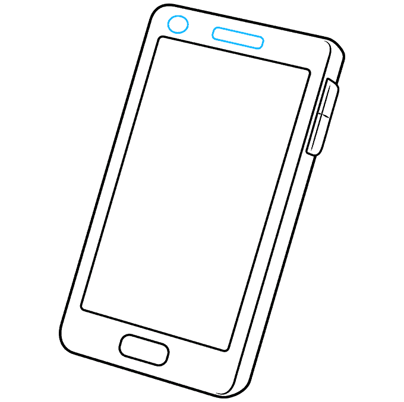

Ask yourself What is the mood? Is the playlist for studying, road trip, workout, background noise,pre-party, or sad. This impacts your song choices. Always consider the occasion you want but there can be other requirments your playlist can fall into maybe for specific seasons or genre.
☆Tip: The more specific your are with the theme, the better your playlist will turn out.
Now that you've set the tone, you have to pick your songs. Start by adding the songs you know and love which should be the easiest. But, don’t stop there. If you’re adding a song you know all the words to, try listening to a few new songs by the same artist or band. One of the best ways to find new music is to use the suggestions on music apps. Platforms like Spotify, YouTube, and Apple Music all have algorithms to recommend songs based on what you’ve already listened to.The more you dig, the better your playlist will become.
Once you have a good mix of classics you love and undiscovered hits, you’ll want to check in and be aware of the length of your playlist. Aim for something that fits the occasion. Having a playlist at least an hour or two long is a good rule. This way, songs don’t become repetitive, and you won’t get lost in a sea of songs that will require you to press the skip button constantly.
Lastly, Title your playlists the title of your playlist can be niche and funny to keep it light and to organize your music by season and vibe.Keep in mind that this playlist is yours. Listen to what you like! Add songs that are special to you, even if they are a bit off-theme. You don’t have to stick with what’s trending or popular if that’s not what you like. Personal touches make your playlist feel uniquely yours and might inspire friends to add new songs to their own playlists.